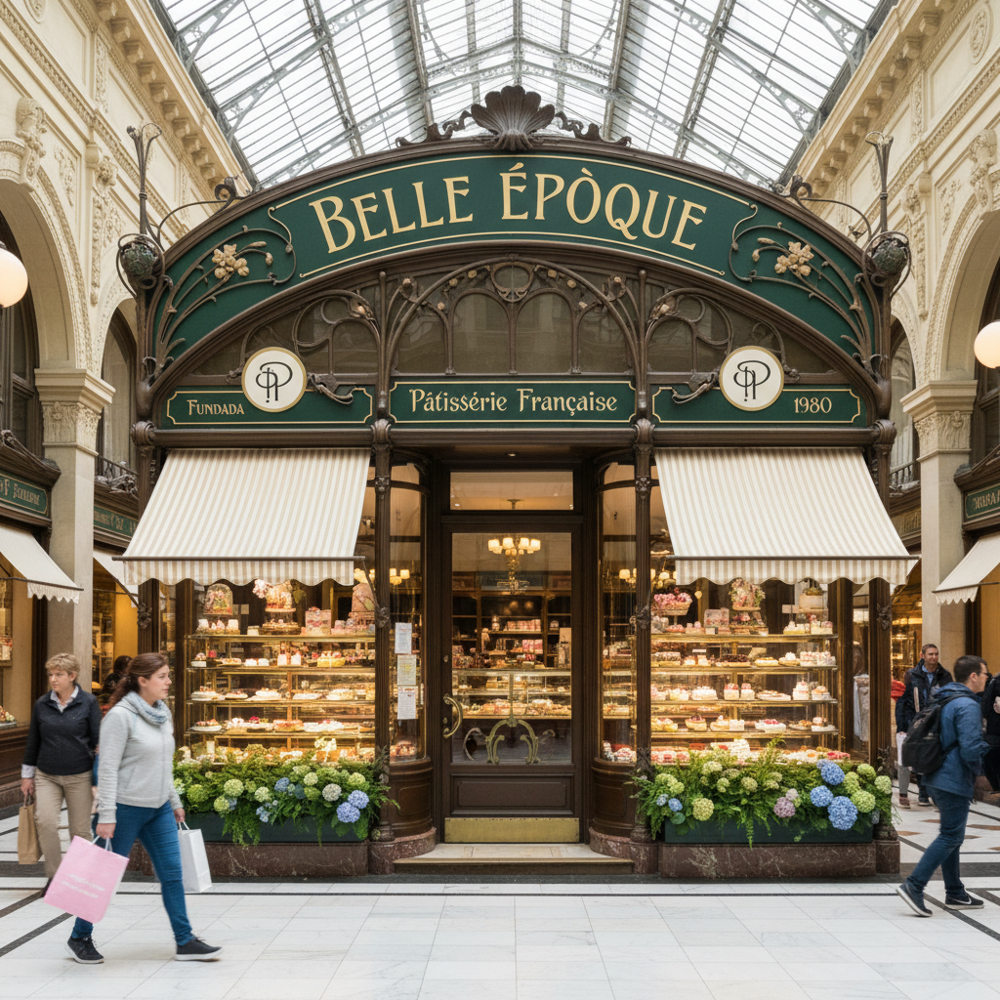
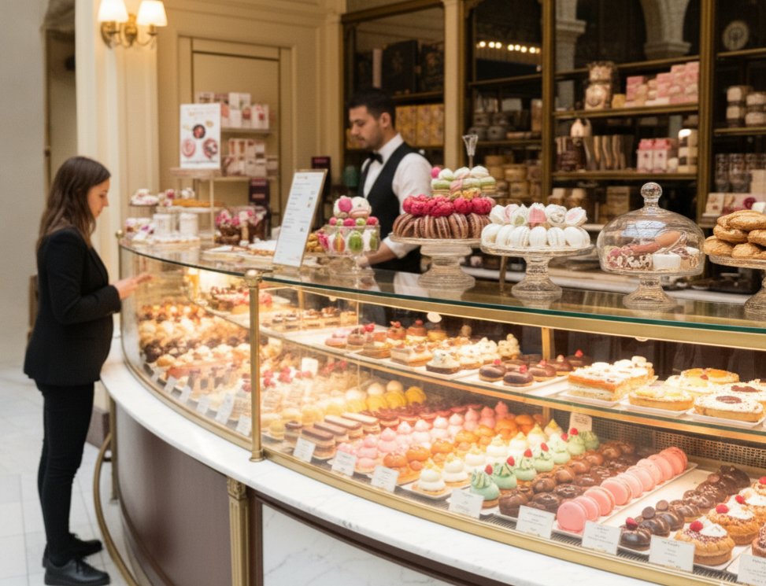
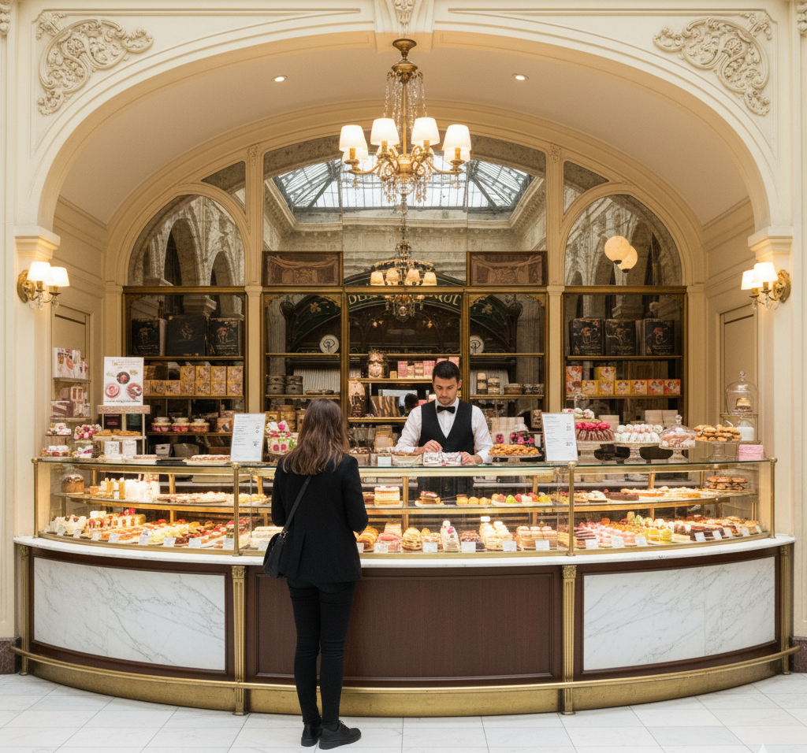
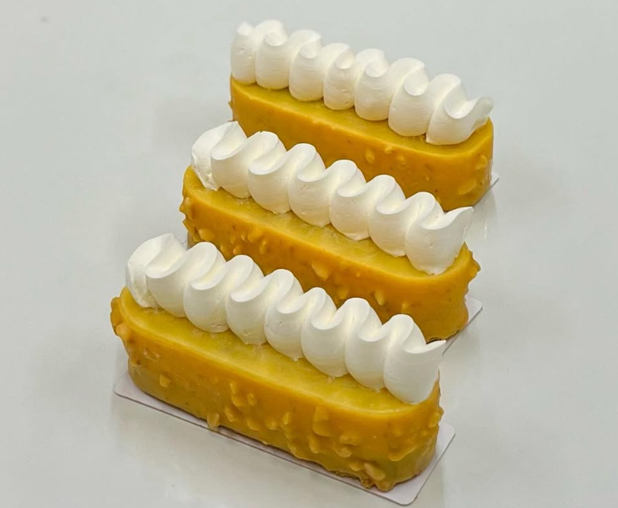
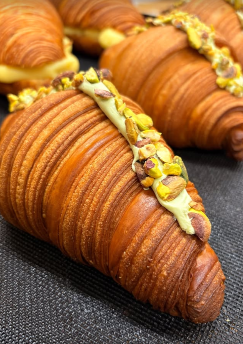
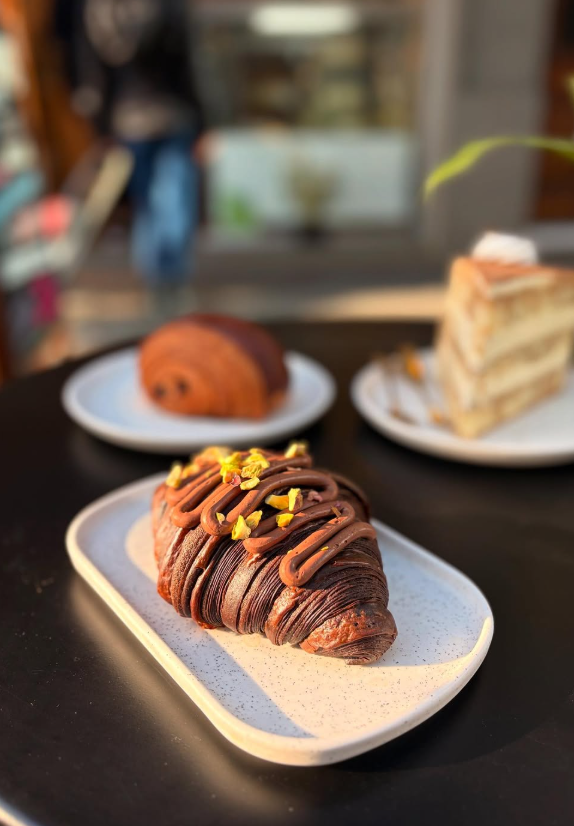
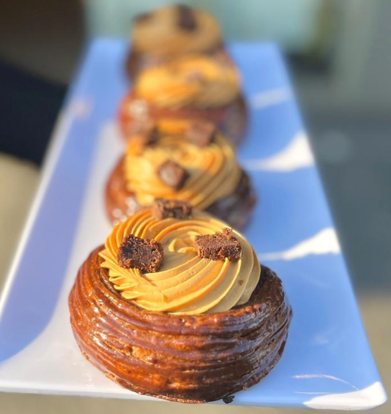
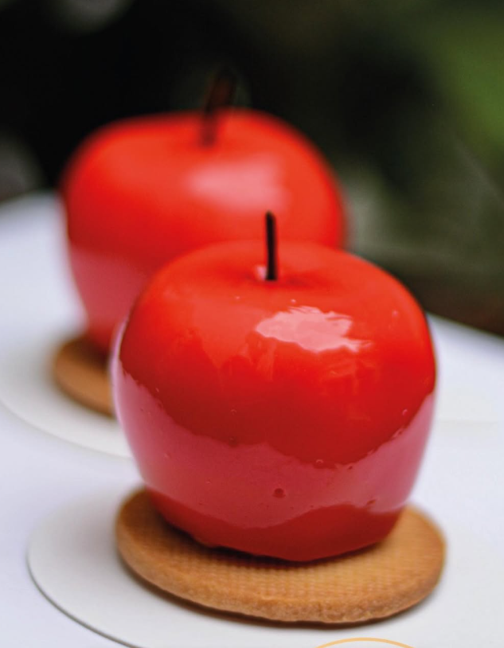
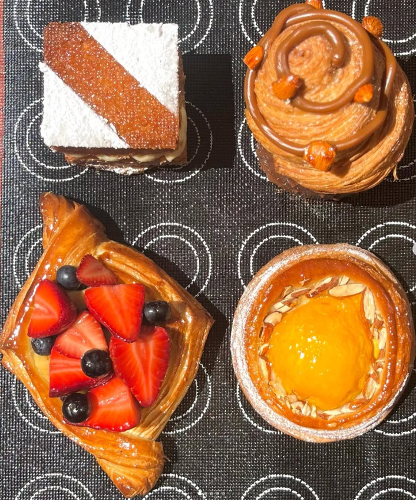

Belle Époque
Auténtica pastelería francesa en el corazón de la galería.
Ver productosNosotros
Belle Époque nació del amor por la pastelería francesa artesanal y el deseo de compartirla en un lugar cercano, cálido y elegante. Cada madrugada trabajamos la masa con paciencia para lograr ese hojaldre ligero y crujiente que perfuma la galería con manteca francesa y vainilla.
“Creemos en lo simple y bien hecho: ingredientes nobles, técnica clásica y un servicio amable en el corazón de la ciudad.”
Estamos en Florida 165, San Martín 170, 1005 Buenos Aires, dentro de la galería. Un punto céntrico y práctico para pasar a buscar tu café con croissant, elegir una tarta para compartir o encargar una torta especial. Bienvenidos a nuestra esquina de París en Buenos Aires.

Nuestro Local
Ambiente elegante y productos recién hechos en el corazón de la galería.


Ver todos nuestros productos












Ubicación
Florida 165, San Martín 170
1005 Buenos Aires
Cómo llegar
Horarios
LUNES A VIERNES
8:30 a 19:30 hs
SÁBADOS
9:00 a 19:30 hs
DOMINGOS
Cerrado